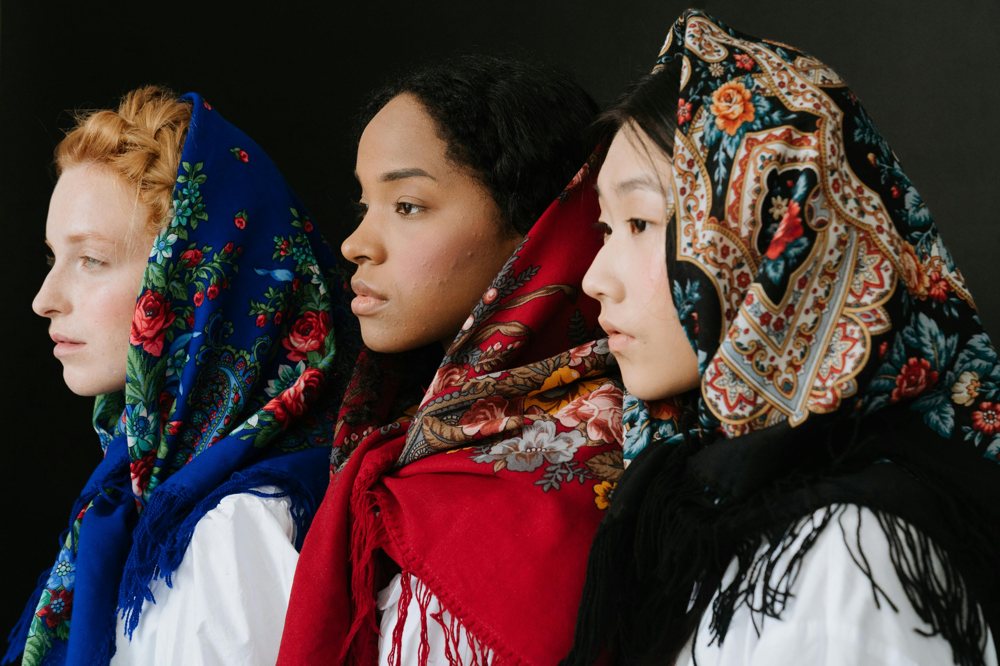
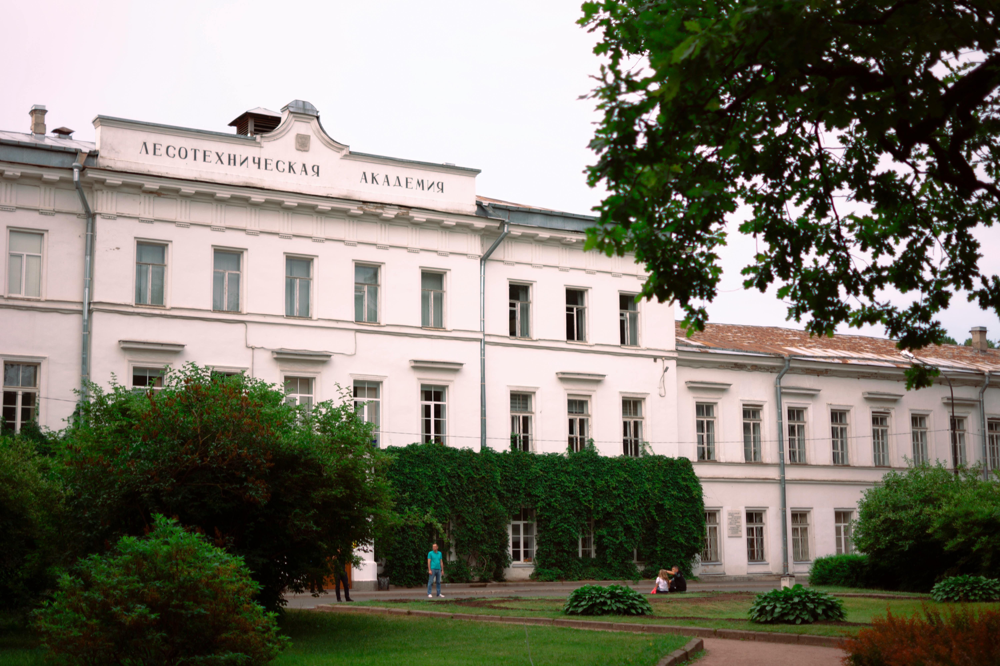
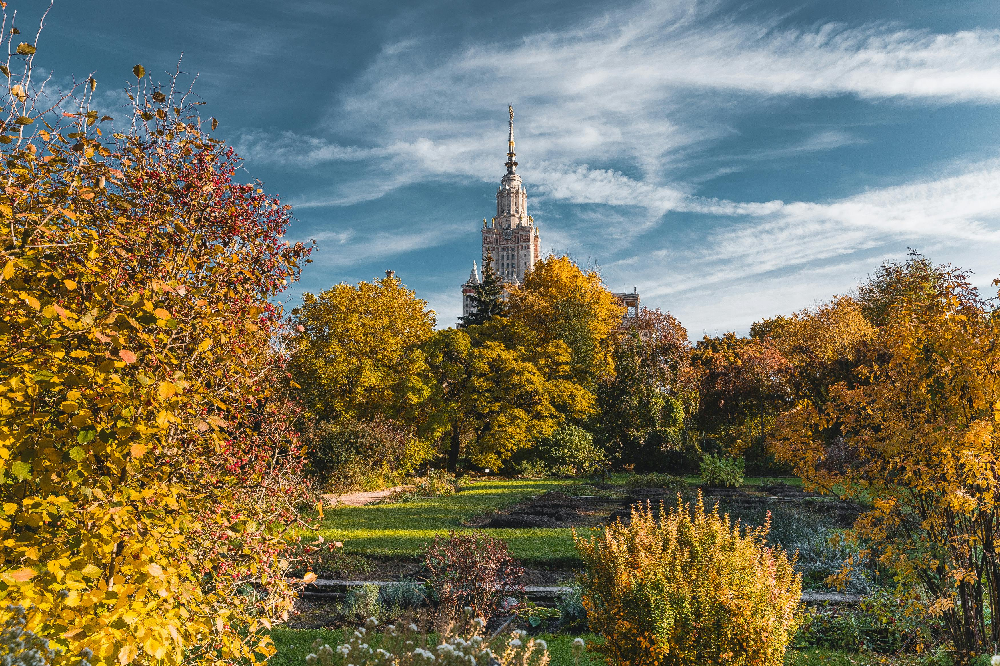
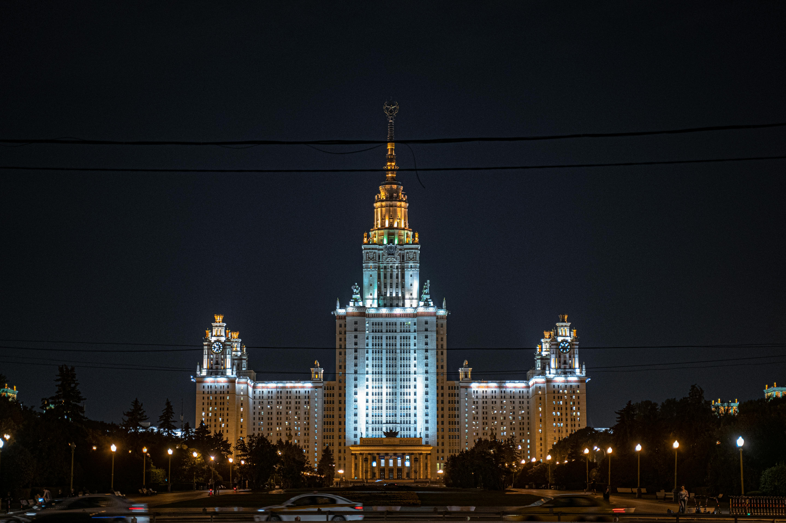

Bienvenue au Guide Étudiant Étranger en Russie
En quoi ce site est il important?
"S'installer dans un nouveau pays est toujours un défi, et la Russie, avec sa richesse culturelle et ses particularités, ne fait pas exception. C'est pourquoi notre site web, Guide Étudiant Étrangers en Russie, se spécialise dans l'intégration des étudiants étrangers en leur offrant une description détaillée et des conseils pratiques sur le pays qui les accueille. Les étudiants étrangers nouvellement arrivés en Russie peuvent rencontrer plusieurs difficultés. La barrière linguistique est souvent l'un des premiers obstacles, car le russe, langue principale du pays, peut être complexe à maîtriser pour les non-russophones. Notre guide propose des ressources linguistiques et des conseils pour faciliter cette transition. Les différences culturelles et les coutumes locales peuvent également poser des défis, influençant les interactions sociales et professionnelles. Grâce à notre site, les étudiants peuvent accéder à des informations culturelles essentielles pour mieux comprendre et s'adapter à leur nouvel environnement. Le climat rigoureux de la Russie, en particulier pendant les longs hivers, peut être un choc pour ceux qui viennent de régions plus chaudes. Nous fournissons des conseils pratiques pour se préparer et s'adapter aux conditions climatiques locales. Les procédures administratives, comme l'obtention d'un visa et l'enregistrement auprès des autorités locales, sont souvent perçues comme complexes et bureaucratiques. Notre guide simplifie ces processus en offrant des informations claires et des étapes à suivre pour faciliter ces démarches. Enfin, s'adapter à la cuisine locale et trouver des produits alimentaires familiers peut également être un défi. Nous proposons des suggestions et des astuces pour découvrir et apprécier la cuisine russe tout en trouvant des alternatives pour ceux qui recherchent des saveurs de chez eux. Malgré ces obstacles, beaucoup trouvent que l'expérience d'apprendre à vivre en Russie est enrichissante et offre une perspective unique sur la culture et le mode de vie russes. Guide Étudiant Étrangers en Russie est là pour rendre cette transition aussi fluide et agréable que possible, transformant ces défis en opportunités d'apprentissage et de croissance personnelle."


Un accueil chaleureux
pour profiter d'un accueil chaleureux à l'Université, envisager d’informer l’univerte avant votre arrivée, car c'est une erreur que commettent la plupart des étudiants étrangers à leur arrivée sur le territoire russe.Et puis ils sont forcés de payer pour rester dans les Hôtels, jusqu'à ce qu'ils soient autorisés dans les dortoirs

Vie sur le campus
Pour mener une vie paisible sur un campus universitaire en tant qu'étudiant étranger, préparez-vous bien avant votre arrivée en recherchant l'université et la culture locale, et assurez-vous d'avoir un logement sûr. Participez aux événements d'orientation et rejoignez des clubs pour vous intégrer socialement. Gérez bien votre temps académique et utilisez les services de soutien si nécessaire. Prenez soin de votre santé physique et mentale, et soyez ouvert aux différences culturelles. Familiarisez-vous avec les ressources de sécurité du campus et gérez vos finances de manière responsable. suivez aussi des video interessentes ici
Découverte de la culture russe
Participez à des festivals, musées et événements pour découvrir les traditions russes et enrichir votre séjour.
Perspectives d’avenir
Les diplômes russes ouvrent des portes dans le monde entier et offrent un réseau d’alumni international.
Procédures d’inscription
Choisir son université et programme
Comparez les universités et programmes, consultez les classements et choisissez celui qui correspond à votre projet. pour plus de detail rendez vous sur le site web: https://www.campusrussie.com/procedure
Constitution du dossier de candidature
Pour constituer un dossier de candidature afin de s'inscrire dans une université russe, vous devez généralement rassembler les documents suivants : un formulaire de demande d'admission dûment rempli, une copie certifiée conforme de votre diplôme de fin d'études secondaires ou de votre dernier diplôme universitaire, un relevé de notes traduit en russe et légalisé, une copie de votre passeport, un certificat médical attestant de votre bonne santé, et des photos d'identité. Selon le programme et l'université, vous pourriez également devoir fournir une preuve de maîtrise de la langue russe ou anglaise, souvent sous la forme d'un certificat de test de langue reconnu. Il est également conseillé de joindre une lettre de motivation et des lettres de recommandation. Assurez-vous de vérifier les exigences spécifiques de l'université à laquelle vous postulez, car celles-ci peuvent varier.
Soumission et suivi du dossier
Pour constituer un dossier de candidature afin de s'inscrire dans une université russe, vous devez généralement rassembler les documents suivants : un formulaire de demande d'admission dûment rempli, une copie certifiée conforme de votre diplôme de fin d'études secondaires ou de votre dernier diplôme universitaire, un relevé de notes traduit en russe et légalisé, une copie de votre passeport, un certificat médical attestant de votre bonne santé, et des photos d'identité. Selon le programme et l'université, vous pourriez également devoir fournir une preuve de maîtrise de la langue russe ou anglaise, souvent sous la forme d'un certificat de test de langue reconnu. Il est également conseillé de joindre une lettre de motivation et des lettres de recommandation. Assurez-vous de vérifier les exigences spécifiques de l'université à laquelle vous postulez, car celles-ci peuvent varier.

Invitation officielle et visa étudiant
Recevez l’invitation officielle, indispensable pour la demande de visa étudiant au consulat russe.
Arrivée et enregistrement
À l’arrivée, enregistrez votre résidence et visa auprès du bureau international de l’université.
 Vie quotidienne
Logement étudiant
En Russie, les étudiants ont plusieurs options pour se loger, allant des résidences universitaires aux locations privées. Les résidences universitaires sont souvent la solution la plus économique, offrant un logement basique mais fonctionnel à proximité des campus. Ces résidences sont généralement partagées avec d'autres étudiants, ce qui peut être une excellente occasion de se faire des amis et de s'intégrer dans la communauté étudiante. Pour ceux qui préfèrent plus d'intimité, louer un appartement privé est une option, bien que cela puisse être plus coûteux. Les sites web locaux et les agences immobilières peuvent aider à trouver des logements adaptés aux budgets étudiants.
Se nourrir à petit prix
Se nourrir à petit prix en Russie est tout à fait possible avec un peu de planification. Les supermarchés locaux et les marchés offrent une variété de produits frais à des prix raisonnables. Les étudiants peuvent tirer parti des magasins discount et des promotions pour économiser sur les produits de base. Cuisiner à la maison est généralement moins cher que de manger au restaurant, et partager les repas avec des colocataires peut également réduire les coûts. De plus, de nombreuses villes ont des cafétérias et des cantines universitaires où les étudiants peuvent manger à moindre coût.

Transports et déplacements
Les transports en commun en Russie sont efficaces et abordables, ce qui est idéal pour les étudiants. Les grandes villes comme Moscou et Saint-Pétersbourg disposent de vastes réseaux de métro, de bus et de tramways qui permettent de se déplacer facilement et à moindre coût. Les étudiants peuvent souvent bénéficier de tarifs réduits sur présentation de leur carte étudiante. Pour ceux qui préfèrent un mode de transport plus flexible, les services de covoiturage et les applications de taxi sont également disponibles, bien que légèrement plus chers. Se familiariser avec les itinéraires et les horaires peut aider à optimiser les déplacements et à économiser du temps.

Vie sociale et loisirs
Participez à des activités sportives, culturelles et associatives pour rencontrer d’autres étudiants et enrichir votre séjour.
Budget et gestion des dépenses
Ouvrez un compte bancaire local, contrôlez vos dépenses et profitez des bons plans étudiants.
Santé & Sécurité
Assurance médicale obligatoire
En Russie, l'assurance médicale est un aspect crucial pour accéder aux soins de santé. Les citoyens russes bénéficient d'une assurance maladie obligatoire qui couvre un large éventail de services médicaux. Pour les étrangers, il est souvent nécessaire de souscrire à une assurance maladie privée pour couvrir les frais médicaux pendant leur séjour. Les étudiants internationaux sont généralement tenus d'avoir une assurance santé valide pour la durée de leurs études. Il est conseillé de bien comprendre les termes de son assurance et de s'assurer qu'elle couvre les besoins spécifiques, y compris les urgences médicales et les hospitalisations.
Accès aux hôpitaux et cliniques
L'accès aux hôpitaux en Russie peut varier en fonction de la région et du type d'établissement médical. Dans les grandes villes comme Moscou et Saint-Pétersbourg, les hôpitaux sont bien équipés et offrent des services de haute qualité. Les citoyens et résidents permanents peuvent accéder aux soins de santé publics gratuitement ou à moindre coût grâce à leur assurance maladie obligatoire. Pour les étrangers, l'accès aux hôpitaux peut dépendre de leur assurance santé privée. Il est important de connaître l'emplacement des hôpitaux et cliniques à proximité de son lieu de résidence et de vérifier les procédures d'admission pour les non-russophones.

Pharmacies et premiers secours
Les pharmacies russes sont nombreuses : trouvez médicaments courants et conseils santé près de chez vous.
Numéros d’urgence
En cas d'urgence médicale en Russie, il est essentiel de connaître les numéros d'urgence locaux. Le numéro d'urgence général en Russie est le 112, qui peut être composé pour obtenir une assistance dans diverses situations d'urgence, y compris médicales. Pour une ambulance spécifique, le numéro à composer est le 103. Ces services d'urgence sont conçus pour répondre rapidement et efficacement aux situations critiques. Il est recommandé de garder ces numéros à portée de main et de savoir comment expliquer clairement la situation et l'emplacement en russe, car les opérateurs peuvent ne pas parler d'autres langues.
Soutien psychologique
Des services de soutien psychologique sont proposés gratuitement dans la plupart des universités pour les étudiants étrangers.
Communication
Téléphonie et internet
En Russie, la téléphonie et Internet sont des services bien développés et largement accessibles, même dans les régions les plus reculées. Les principaux opérateurs de téléphonie mobile, tels que MTS, Beeline, Megafon et Tele2, offrent une couverture étendue et des forfaits compétitifs, incluant des appels, des SMS et des données mobiles. La plupart des Russes utilisent des smartphones, et l'accès à Internet mobile est rapide et fiable dans la plupart des zones urbaines. Les cafés, les restaurants et les lieux publics offrent souvent un accès Wi-Fi gratuit, ce qui facilite la connexion à Internet pour les résidents et les visiteurs. Les services Internet à domicile sont également très répandus, avec des vitesses de connexion généralement élevées, permettant le streaming, les jeux en ligne et le télétravail.
Applications utiles
Pour faciliter la vie quotidienne, plusieurs applications téléphoniques sont largement utilisées en Russie. Les applications de messagerie comme WhatsApp et Telegram sont populaires pour la communication, tandis que des applications locales comme VK (VKontakte) offrent des services de réseau social et de messagerie intégrée. Les applications de transport, telles que Yandex.Taxi et Citymobil, sont essentielles pour se déplacer facilement dans les villes. Yandex propose également une suite d'applications, incluant des cartes, un navigateur et un service de livraison de nourriture, qui sont très utiles. Pour les services bancaires et les paiements, des applications comme Sberbank Online et Tinkoff sont couramment utilisées pour gérer les finances personnelles. Ces applications aident les utilisateurs à rester connectés, informés et mobiles dans leur vie quotidienne.
Communautés étudiantes
Rejoignez les groupes VKontakte et les forums étudiants pour échanger et trouver des bons plans.
Se déplacer en Russie
Les applications de transport facilitent vos trajets : suivez les horaires en temps réel et trouvez les meilleurs itinéraires.
Traduction et apprentissage du russe
Apprenez les bases du russe grâce à des applications et bénéficiez du soutien des locaux.

Culture & Intégration
Langue et cours de russe
La langue russe est l'une des langues slaves les plus parlées au monde et est la langue officielle de la Russie. Apprendre le russe peut être un atout majeur pour quiconque souhaite vivre, étudier ou travailler en Russie. Bien que l'alphabet cyrillique puisse sembler intimidant au premier abord, il est assez logique et peut être maîtrisé avec de la pratique. De nombreuses ressources en ligne, des cours de langue et des applications mobiles sont disponibles pour aider à apprendre le russe. La maîtrise de la langue peut grandement faciliter l'intégration et améliorer l'expérience de vie en Russie.
Événements culturels
Ne manquez pas les festivals, expositions et concerts organisés dans votre ville universitaire.La Russie est riche en événements culturels tout au long de l'année, reflétant son histoire et sa diversité culturelle. Des festivals de musique classique aux célébrations traditionnelles comme Maslenitsa, il y a toujours quelque chose à découvrir. Les grandes villes comme Moscou et Saint-Pétersbourg accueillent des événements internationaux, des expositions d'art et des spectacles de ballet. Participer à ces événements est une excellente façon de s'immerger dans la culture russe et de rencontrer des gens partageant les mêmes intérêts.
Associations étudiantes
Intégrez des associations internationales ou locales pour tisser des liens et partager des expériences.
Traditions russes
Découvrez les fêtes nationales, la cuisine et les coutumes qui font la richesse de la Russie.

Intégration sociale
Les universités encouragent l’intégration : soirées, rencontres internationales et activités communes.

Contacts utiles
Ambassades et consulats
Contactez votre ambassade ou consulat en cas de besoin : assistance administrative, urgence ou conseils.Les ambassades en Russie jouent un rôle crucial pour les étrangers, offrant des services consulaires, de l'assistance pour les visas et un soutien en cas d'urgence. Chaque ambassade a un site web avec des informations détaillées sur les services offerts, les heures d'ouverture et les procédures à suivre pour diverses demandes. Il est conseillé de s'inscrire auprès de son ambassade locale dès son arrivée en Russie pour recevoir des mises à jour et des conseils de sécurité.
Bureaux internationaux universitaires
Les universités russes disposent souvent de bureaux internationaux dédiés à aider les étudiants étrangers avec leur intégration, leur logement et leurs questions académiques. Ces bureaux offrent des services de soutien, des conseils sur les visas et des programmes d'orientation pour faciliter l'adaptation des étudiants internationaux. Ils organisent également des événements sociaux et culturels pour favoriser l'intégration des étudiants étrangers dans la communauté universitaire.

Services d’aide
Profitez du soutien psychologique et juridique offert par les établissements d’enseignement supérieur.

Numéros d’urgence
Conservez les numéros d’urgence locaux, ainsi que ceux de l’université et de votre ambassade.

Plateformes d’entraide
Rejoignez les groupes d’entraide étudiants pour échanger conseils et astuces au quotidien.
FAQ
Perte de passeport ou documents
En cas de perte, contactez la police et rendez-vous à votre ambassade pour déclarer et refaire vos papiers.En cas de perte de passeport en Russie, il est important d'agir rapidement. La première étape consiste à signaler la perte à la police locale pour obtenir un rapport de police. Ensuite, contactez votre ambassade ou consulat pour demander un nouveau passeport. Ils vous guideront à travers le processus de remplacement et vous aideront à obtenir les documents nécessaires pour continuer votre séjour en toute légalité.
Prolongation de visa
Demandez la prolongation de votre visa auprès du service d’immigration local et de l’université.La prolongation d'un visa russe nécessite de suivre une procédure spécifique qui peut varier selon le type de visa. Généralement, il faut se rendre au bureau local des services de migration avec les documents requis, tels que le passeport, le formulaire de demande rempli et une preuve de résidence ou d'inscription à une institution. Il est crucial de commencer le processus de prolongation bien avant l'expiration du visa actuel pour éviter tout problème juridique.

Urgence médicale
Appelez le 103 pour une ambulance et prévenez le bureau international de votre université.

Ouvrir un compte bancaire
Rendez-vous dans une banque locale avec votre passeport, visa et certificat d’étudiant pour ouvrir un compte.

Travailler en tant qu’étudiant
Renseignez-vous sur les possibilités de travail étudiant avec le service international de votre université.
Carte interactive
Plan du campus
Consultez le plan interactif du campus pour repérer les bâtiments, bibliothèques, cafés et résidences.

Carte du métro et des transports
Accédez à la carte du métro et des bus pour organiser vos déplacements en ville facilement.
Localisation des commerces
Trouvez les supermarchés, pharmacies et restaurants proches de votre résidence étudiante.
Ambassades et consulats
Repérez les ambassades et consulats sur la carte pour faciliter vos démarches administratives.
Espaces de loisirs et culture
Découvrez les espaces verts, musées et centres sportifs à proximité de votre université.
Liens & Documents à télécharger
Guides officiels
Téléchargez le guide officiel PDF et accédez aux ressources administratives pour les étudiants étrangers.Les étrangers en Russie doivent s'assurer d'avoir tous les documents nécessaires pour leur séjour, y compris un visa valide, un enregistrement de migration et une assurance santé. Il est également conseillé de garder des copies de tous les documents importants, comme le passeport et le visa, et de connaître les procédures locales pour les renouvellements et les mises à jour. Les bureaux de migration locaux et les services consulaires peuvent fournir des guides et des conseils pour rester conforme aux réglementations.
Sites utiles
Retrouvez les liens du ministère de l'éducation, des universités et des services pratiques.Plusieurs sites web sont très utiles pour les étrangers vivant en Russie. Des plateformes comme Expat.com offrent des conseils et des forums pour les expatriés. Les sites des ambassades et des consulats fournissent des informations officielles et des mises à jour. Des applications locales comme Yandex Maps et des services de traduction peuvent également faciliter la vie quotidienne. Ces ressources sont précieuses pour naviguer dans les aspects pratiques de la vie en Russie.

Apprendre le russe
Accédez à des ressources pour apprendre le russe : applications, vidéos, podcasts et conseils linguistiques.

Modèles de documents
Téléchargez des modèles de lettre, CV, attestations et formulaires administratifs.
Plateformes d’entraide
Rejoignez la plateforme d’entraide étudiante pour poser vos questions et obtenir des réponses rapidement.